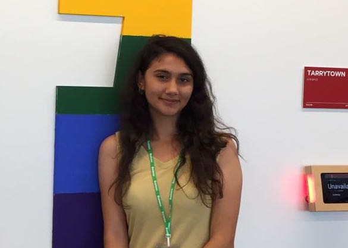
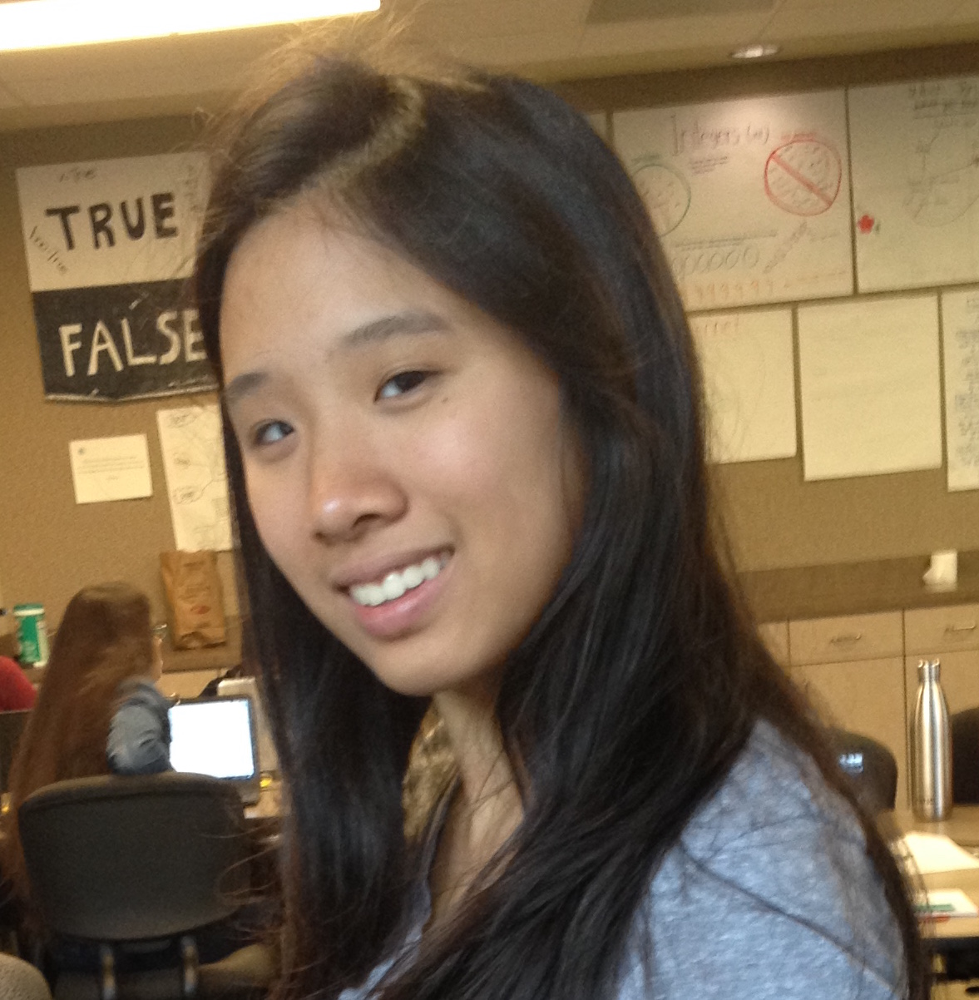

About Us
Our mission is to provide the community with a quick place to find information on emergency situations. We understand that it is frustrating to sift through long articles to find basic information. We aim to keep both young children and adults well informed on disasters and emergency situations
How we started
The creators of this website, Allison and Sevilay met at a Girls Who Code summer intensive in Austin, Texas. For their final project, they made this Emergency Videos website. They believed that many injuries and damage could be reduced by proper knowledge of how to react to disaster.
Contact Us
Our Email Address: emergencyvideogwc@gmail.com
The Creators
Sevilay Özturk
Hello, I am Sevilay Öztürk from Houston, Texas. I am a senior at Harmony School of Science. I like reading Russian classics, and I like to listen to classical music and progressive rock. I love coding and designing websites in my freetime and messing around with technology in general.
Allison Lee
Hi. I am Allison from Houston, Texas. I enjoy playing piano and drawing. I am addicted to learning and I am getting curiouser and curiouser. I am usually up late at night playing around with the internet. I like French music and psychedelic rock.